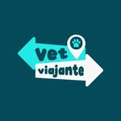
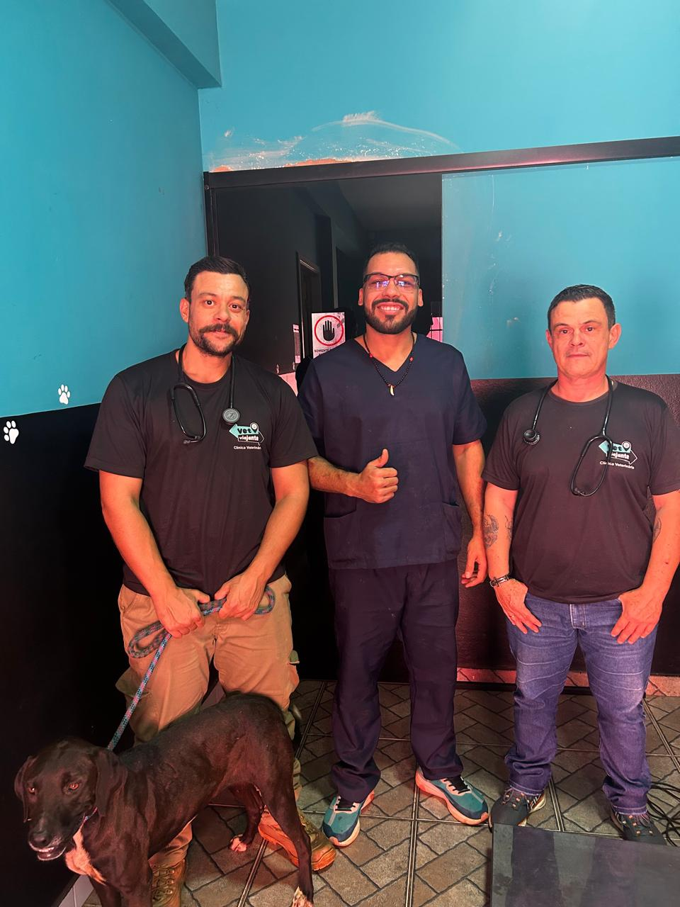

Consultas, cirurgias e acompanhamento clínico especializado para cães e gatos — com resultado de exames na hora e o carinho que seu animal merece.

A Vet Viajante nasceu de um propósito simples: levar cuidado veterinário de excelência diretamente a quem precisa. Atendemos pequenos animais com foco total em diagnóstico rápido, cirurgia segura e acompanhamento humano.
Nossa equipe é formada por veterinários especializados em clínica geral e cirurgia de pequenos animais, utilizando equipamentos de última geração e protocolos reconhecidos internacionalmente.
Do diagnóstico ao pós-operatório, uma linha completa de cuidados com a mesma exigência de uma clínica de referência.
Hemograma, bioquímico, hormônios — resultado na própria consulta, sem dias de espera.
⚡ Resultado na horaCastração, nodulectomia e ortopedia com anestesia monitorada e protocolo rigoroso.
Alta qualidadeAvaliação completa com anamnese detalhada, exame físico e orientação personalizada.
EspecializadoPlano alimentar individualizado por veterinário nutrólogo conforme raça, peso e condição clínica.
Nutrição clínicaProtocolo vacinal completo, antipulgas, vermífugos e controle de ectoparasitas.
Protocolo atualizadoMonitoramento de pets com doenças crônicas, pós-operatório assistido e retorno incluso.
Pós-cirúrgico inclusoOs números que explicam por que tutores que passam pela Vet Viajante não voltam para clínicas comuns.
Hemograma e bioquímico processados in loco. Você sai com o diagnóstico na mão.
Anestesia monitorada por equipamento digital, oximetria e pressão durante todo o procedimento.
Um veterinário dedicado ao seu pet. Sem rodízio de profissionais, sem histórico perdido.
Tutores têm acesso direto ao veterinário responsável no período pós-consulta ou pós-cirúrgico.
Os depoimentos da Vet Viajante vão voltar em breve, com uma apresentação mais organizada e alinhada ao restante do site.
Sabemos que você escolhe com cuidado quem vai cuidar do seu pet. Justo.
Todos os procedimentos são realizados com anestesia monitorada, instrumental esterilizado e protocolo de biossegurança rigoroso. Exigimos exames pré-cirúrgicos e avaliamos individualmente cada caso.
Sim. Utilizamos analisadores hematológicos e bioquímicos de precisão clínica, calibrados diariamente, com acurácia equivalente a laboratórios externos.
O pós-operatório está incluído. Você recebe orientações por escrito e acesso direto ao veterinário responsável pelos primeiros dias de recuperação.
Somos especializados em pequenos animais — cães e gatos até 25kg. Para casos específicos, avaliamos previamente e indicamos o melhor caminho com honestidade.
Consultas disponíveis esta semana. Sem longas filas, com o profissional que vai conhecer seu animal pelo nome.
Quero agendar minha consulta →